lokalny biznes
w czasach globalnej niepewności
 

w czasach globalnej niepewności

2. Edycja Konin Business Meeting

Zapraszamy Państwa na drugą edycję wyjątkowej konferencji biznesowej, która odbędzie się 7 kwietnia 2022 roku. Wydarzenie skierowane jest do wszystkich przedsiębiorców w subregionie konińskim, którzy w obliczu globalnych zmian stanęli przed pytaniem: „I co dalej?”.

Tegoroczna edycja skupiać się będzie na realnych problemach i pytaniach lokalnych przedsiębiorców w trudnych czasach globalnej niepewności. Celem konferencji jest ułatwienie podejmowania decyzji w taki sposób, by potencjalne zagrożenia wynikające z sytuacji, stały się realną szansą na sukces. Kwestie te są niezwykle ważne w regionie Wielkopolski Wschodniej, która stoi przed wyzwaniami transformacji energetycznej oraz widocznych zmian demograficznych.

W ramach konferencji wystąpią prelegenci, którzy są praktykami biznesu o wieloletnim doświadczeniu. Będzie to doskonała okazja dla młodych, jak i tych doświadczonych przedsiębiorców, do pozyskania nowego punktu widzenia na obecną rzeczywistość rynkową.
konferencji
Omówienie zmian i obecnego charakteru rynku lokalnego
Elastyczne planowanie w obliczu ciągłych zmian
Cyberbezpieczeństwo i nowe technologie
Wielkopolska Wschodnia - szanse i zagrożenia dla biznesu w regionie
konferencji 07.04.2022
Data:
07.04.2022r.
Miejsce:
Akademia Nauk Stosowanych w Koninie Centrum Wykładowo-Dydaktycze, ulica ks. J. Popiełuszki 4
9:00
Rejestracja (poranna kawa i ciacho)
9:30
Otwarcie
9:45
Świat się zmienił. Nic nie jest takie, jak wczoraj. Czy lub kiedy wróci normalność?
Zagadnienia:
Rynek pracy (demografia, płace, migracja), inflacja, stopy procentowe, globalizacja vs. lokalizacja, odwrócenie łańcuchów dostaw. Analiza przedsiębiorców z KIG (lub wystąpienie gościa).
Prezentuje - Mateusz Kowalewski (lub Grzegorz Maliszewski, Millennium)
10:15
Panel I: Oswoić "Czarnego Łabędzia" czyli przewidzieć nieprzewidziane. Jak zawsze być 2 kroki do przodu?
Zagadnienia:
Uczestnicy: Aleksandra Michnicka (RESORT MARKETING), Eliza Gwizd(AGTOS), Michał Wasik (ROLPLAN), Andrzej Nowak (Kancelaria Prawna RPMS Staniszewski i Wspólnicy), Sebastian Strzech (COMP-NET)
Moderacja: w trakcie ustaleń
11:15
Przerwa kawowa / networking
11:45
Panel II: Wielkopolska Wschodnia –zostać czy wyjechać? Szanse i zagrożenia dla biznesu w regionie.
Zagadnienia:
Uczestnicy: Beata Wieliczko (VN CONSULTING), Agnieszka Pawłowska (GLOBAL STRATEG), Maciej Sytek (ARR KONIN), Robert Ligocki (WORK&BENEFIT), Władysław Kocaj (STAROSTWO POWIATOWE)
Moderacja: Mateusz Kowalewski
12:45
Lunch
13:30
Równoległe sesje warsztatowe
Sesja I
Internacjonalizacja biznesu
Jak wejść z biznesem na rynki zagraniczne
Sesja II
Przyszłość regionu
Czy tylko energia? Głos przedsiębiorców w sprawie przyszłości Wielkopolski Wschodniej
Sesja III
Marketing
Jak promować firmę wnowoczesnych mediach i radzić sobie z zagrożeniami dla wizerunku
14:30
„Odetchnij głęboko! Jak złapać zdrowy dystans do rzeczywistości?”
Naszym gościem specjalnym będzie Pan Maciej Szyszka, który opowie o tym jak oddech, spokój, koncentracja oraz zimno przekładają się na zdrowie oraz jakość życia i relacji z otoczeniem.
16:00
Zakończenie
Koszt udziału w wydarzeniu to 50 zł. Dla członków KIG przygotowana została zniżka członkowska.
Istnieje możliwość nabycia biletu połączonego z Afterparty, które odbędzie się w Restauracji PEPE NERO o godz. 18:00.
Kup bilet na to wydarzenie, klikając w przycisk poniżej.
Organizatorzy
Partnerzy
Patronat medialny